“Java 与 C++ 之间有一堵由内存动态分配和垃圾收集技术所围成的高墙，墙外面的人想进去，墙里面的人却想出来。” —— 《深入理解Java虚拟机》
Java 中垃圾回收(GC)机制是内存管理的核心组成部分，它负责自动回收不再使用的内存空间。
本文将以垃圾回收的设计指标和常见算法起笔，用理论与图解结合的形式详细讲解 Java 中的 “清道夫” —— 垃圾回收器的设计思路与实现原理。
在阅读本文前，请确保你已经有 JavaEE 基础，对 JVM 内存结构有一定了解。
如无特殊说明，下文中的 JVM 都特指 HotSpot 虚拟机。
本文约 10836 词，预计需要 28 分钟。
垃圾回收的性能指标
不可能三角
不可能三角(Impossible Trinity) 本属经济领域，又称蒙代尔三角。
具体指在金融政策中: 资本自由流动、固定汇率、货币政策独立 三者不可兼备。
在垃圾回收算法中，不可能三角指 高吞吐量、低暂停时间、高内存使用率 三者不可兼备。
吞吐量
吞吐量(Throughput) 指运行用户代码的时间占总运行时间的比例。
其中总运行时间 = 用户代码运行时间 + 垃圾回收运行时间。
垃圾回收运行时间越短，吞吐量越高。
暂停时间
暂停时间(Stop The World: STW) 是指垃圾回收过程中，需要其他线程暂停，垃圾回收线程单独运行的时间。
暂停时间越短，即 STW 越短，对局部运行效率影响越小，但可能会降低吞吐量。
例如：为了更短的 STW，通过各种设计将一个 STW 拆分为多份，多份 STW 总和可能大于原先一次 STW，但可以防止程序运行效率骤降，平滑尖刺。
内存使用率
内存使用率(Footprint) 一般指 Java 堆内存中 能有效利用的内存 占 堆总内存 的比例。
不同垃圾回收器在设计中可能会将堆分为利用部分和辅助垃圾回收的部分，辅助垃圾回收的部分堆无法正常使用。在不同的垃圾回收器下，堆的利用率不有很大不同。
垃圾判别
在 GC 过程中，最基础的任务是如何判别一个对象是否需要回收。
在没有自动垃圾回收器的语言中，一般由程序员人工判定对象是否需要回收，这一般存在两个基础问题：对象过早回收导致空指针异常或对象没有回收导致内存泄露。
在人工回收中，非常依赖程序员的思维能力与经验，稍有不慎就可能在内存层面对系统稳定性带来巨大压力。
在自动垃圾回收中，一般通过两种方式判断对象是否为垃圾。
计数引用
计数引用(Reference Counting) 的核心思想是在创建新对象时为每个对象分配一个计数器，当对象被其他对象引用，则计数器加一，解除引用则减一。
在该算法下，垃圾回收中只需要扫描所有对象的计数器，若计数器为 0，则可以直接回收。
技术引用设计简单，易于实现，效率很高，但计数引用存在致命的问题：循环引用。
现假设场景：
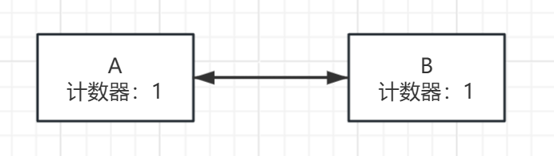
**对象 A 和对象 B 互相持有对方引用，计数器都不为 0，照技术引用原理，不应该回收。但 A 和 B 已经无外部引用，无法从外部访问，则造成了内存泄露。**无法访问的对象被永远地留在了堆中，久而久之，堆会被无法访问对象填满，引发OOM (Out Of Memory)。
可达性分析
根据 GC 理论，垃圾回收应当回收程序中废弃的内存，也就是程序不再能访问到的内存，即不可达的内存。
可达性分析算法通过 GC Roots 对象作为起点，从这些节点开始搜索，分析引用链，以此确定不可达对象。当一个对象不在任何引用链上时，该对象应当被回收。
GC Roots
GC Roots 是可达性分析的根基，是一组必须活跃的引用，在 JVM 中，可以作为 GC Roots 的对象有以下几种：
- 虚拟机栈中引用的对象。
- 方法区中静态属性、常量引用引用的对象。
- 方法区中常量引用的对象。
- 本地方法栈中引用的对象。
- 被同步锁(synchronized) 持有的对象。
- 存在跨代引用的对象。
- Java虚拟机内部的引用，如基本数据类型对应的封装对象，常驻的异常对象(NullPointException，OutOfMemory) 以及系统类加载器。
- 反映Java虚拟机内部情况的JMXBean、JVMTI中注册的回调、本地代码缓存。
OopMap
OopMap(Ordinary Object Pointer Map)：普通对象指针地图。
在每轮垃圾回收中，为了分析每个对象的可达性，都必须遍历整个虚拟机以寻找 GC Roots 对象，一旦方法区过大，则搜索效率极低。并且在搜索中为了保证结果正确，必须暂停所有的用户线程，即 STW: Stop The World。
基于上述问题，HotSpot 引入了称为 OopMap 的数据结构，OopMap 是典型的以空间换时间的开发思想。
OopMap 在程序运行到特定的位置时，记录栈和寄存器里哪些位置是引用。以 OopMap 为参照，垃圾回收器可以直接获取相关信息，而不需要遍历搜索整个堆，极大地提高了获取 GC Roots 的效率。
安全点与安全区
在垃圾回收中，并非线程执行到任何位置都可以进行垃圾回收。当一段代码进行大量的引用关系变化时，该区域不应该进行垃圾回收工作，只有在特定位置，令其他线程挂起后，再让垃圾回收线程工作。
OopMap 在对象引用关系发生改变时需要更新，如果每个指令都更新对应的 OopMap，则需要大量的存储空间，拖慢执行效率。
在上文提到，OopMap 只会在特定的位置记录信息，这些位置称为：安全点(Safe Point)。
安全点的放置有一个核心标准：是否具有让程序长时间执行特征。长时间执行最明显的特征是指令或指令序列的复用。例如：方法调用、循环跳转、异常跳转。
安全区域可以简单理解为安全点的推广，将零维的安全判定拓展到了一维。即从点拓展到一段代码序列。安全区域指一段代码中对象的引用关系不会发生变化，在这个区域中的任何位置开始 GC 都是安全的。
安全判定
在进行垃圾回收时，垃圾回收线程需要判断其他的用户线程是否处于安全状态，一般有以下方式：
- 安全点的判定
- 抢占式中断：当需要进行垃圾回收时，先中断所有线程，检查这些线程是否在安全点，如果不是，则恢复线程执行到安全点再中断。该方法效率低，目前已基本不再使用。
- 主动中断：当需要进行垃圾回收时，设置一个中断标志，所有线程在执行时不断轮询该标志位，当标志为真则主动挂起，配合垃圾回收线程工作。
- 安全区域的判定
- 当线程运行到安全区域时，则通过标识表示线程进入安全区，当需要垃圾回收时，可以忽略该线程，直接进行垃圾回收。
- 当线程离开安全区域时，会先检查是否完成垃圾回收，如果垃圾回收仍在进行，则中断，直到垃圾回收结束为止。
通过安全判定，可以将垃圾回收过程与其他程序执行过程分离，便于垃圾回收展开。
垃圾回收算法
标记 - 清除算法
标记 - 清除(Mark And Sweep) 算法在回收中分为两步：标记(Mark) -> 清除(Sweep)。
在标记阶段，垃圾回收器会先标记出所有可以回收的对象。在清除阶段，将可回收的对象清除。
标记 - 清除算法是非常高效的回收算法，但存在致命的问题：经过多次标记清除后，会产生大量不连续的内存碎片，且该过程不可逆，大量碎片会导致分配大对象的效率骤降。
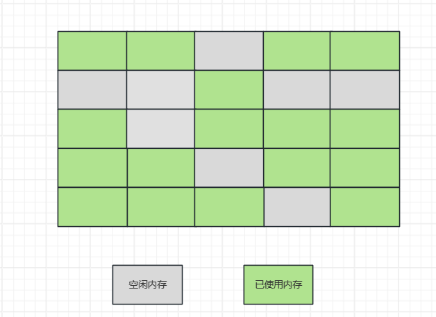
复制算法
为了解决内存碎片的问题，提出了复制(Copying)算法。
复制算法的思路是将堆分为大小相同的两块，每次仅使用其中一块。当回收垃圾时，将堆中所有存活的对象依次转移到另一块堆中，并将堆整个清除。
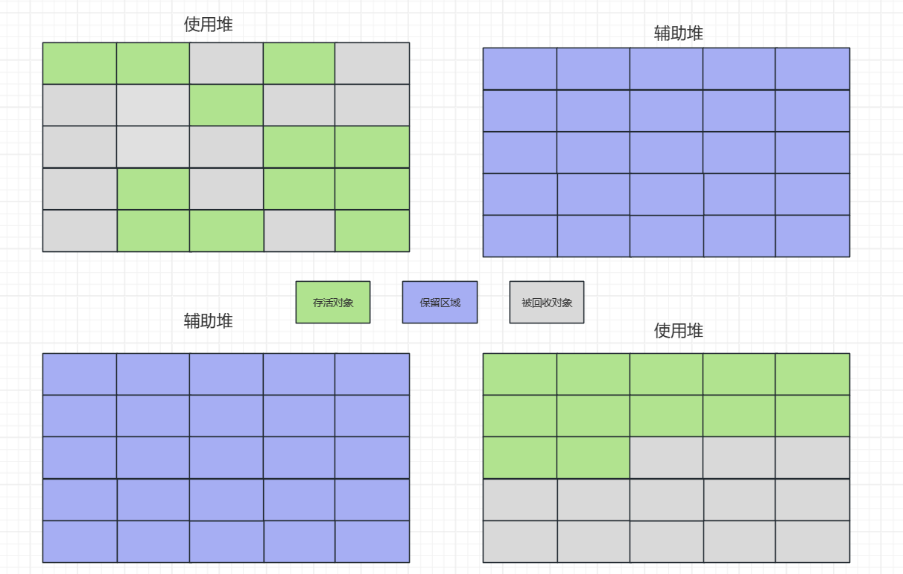
复制算法没有内存碎片问题，但堆内存利用效率不高，只有50%，浪费了大量内存空间。
标记 - 整理算法
标记 - 整理(Mark And Compact) 算法是标记 - 清除算法的改良版，标记过程两者类似，在清除阶段以整理算法替代。
整理算法的核心是令所有存活对象移向内存一侧，清理其余部分。
整理算法优化了内存使用率，但移动对象是复杂的过程，需要改变对象映射的内存地址，所以一次回收效率很低。不适合频繁的垃圾回收。
堆分代模型
单代垃垃圾回收，争取在一次垃圾回收过程中完成对整个 Java 堆的回收，尽可能提高吞吐量。
当堆过大时，对堆的一次回收可能会耗费极长时间，暂停时间飙升，响应业务响应。
一般情况下，暂停时间越短，则意味着垃圾回收少量多次，单次垃圾回收时间更短，总体时间反而更高。这是目前短暂停时间 - 高吞吐量 两难处境之间必要的取舍。
为了达成少量的目标，需要控制垃圾回收的规模。一般做法是将堆划分为不同区域，分别进行回收。
在 JVM 一般实现中，堆被分为两个部分，通常称作：年轻代 (Young Gen) 和 老年代 (Old Gen)。
在分代模型下，每个对象都有一个年龄，通常存储于对象Mark Word中。当对象经过一次垃圾回收并存活下来，则年龄 + 1，当对象的年龄达到阈值，则从年轻代转移到老年代。这个过程称为：晋升。
新老年代的划分主要依据统计结果，统计表明，在 Java 程序中，一定时间段内创建的新对象大部分都会被一轮 GC 回收。而剩下的对象会撑过多轮回收。
因此，新对象创建在年轻代中，将存活的老对象晋升至老年代，通过调整对两代空间的回收频率，可以有效控制垃圾回收的规模，降低暂停时间。
年轻代
年轻代(又称：新生代)是一个笼统的概念，主要由 伊甸园区(Eden Space) 和 幸存者区(Survivor Space) 组成，针对年轻代的垃圾回收称为：Minor GC或Young GC。
因年轻代需要频繁回收，追求高效，所以大部分垃圾回收器在回收年轻代时使用复制算法。
当一个新对象被创建时，会进入伊甸园区，如果经过一轮垃圾回收仍然存活，则会通过复制算法进入幸存者区。
在一般的分代理论中，幸存者区分为两部分S0与S1。在每次针对年轻代的垃圾回收中，幸存者区存活的对象伴随新进入幸存者区的对象，在 S0 区域和 S1 区域互相流转。
分配担保原则
新生代的设计非有种“刀尖舞者”的感觉，Java 虚拟机在极小的伊甸园内孕育对象，会遇到伊甸园剩余空间不足以创建对象的情况。
当伊甸园区的空间不足时，会进行Minor GC，只针对年轻代进行一次垃圾回收，也称作Young GC。
当进行 Minor GC 后，新生代剩余空间仍不足以创建对象，则使用分配担保原则，将年轻代所有对象晋升至老年代。该类现象通常发生在一段时间内创建大量对象时期，例如Spring容器启动时。
老年代
老年代在设计时就认定：该区域相较于年轻代，不会进行频繁的垃圾回收。
所以老年代一般不使用复制算法，而是标记-整理算法。力求对老年代区域实现完全的治理。
针对老年代的垃圾回收一般称为：Major GC 或 Old GC。同时，当垃圾回收器同时回收年轻代和老年代时，该回收行为称作Full GC。
值得一提的是，在代码中可以使用System.gc();手动触发一次 Full GC。**该代码并不能保证 Full GC 立刻执行，而是唤醒垃圾回收器，最终 Full GC 的执行时间由垃圾回收器自行决断。**在工程中，不推荐手动触发垃圾回收器，手动触发垃圾回收可能会打断 JVM 的垃圾回收节奏，为线上环境带来不可控因素。在线上环境中，可以添加 JVM 参数：-XX:+DisableExplicitGC以禁用手动触发 GC。
经上述介绍，堆分代模型示意图如下：
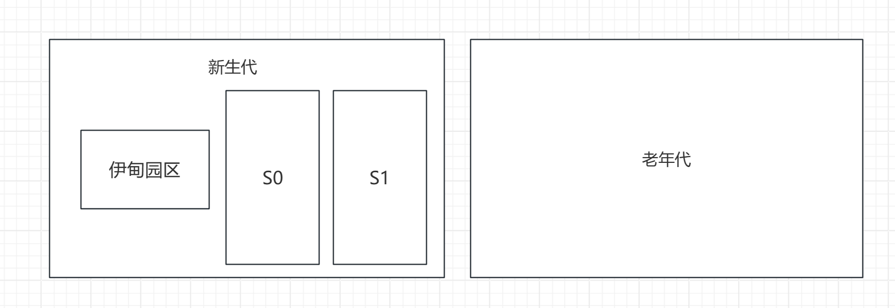
跨代引用
跨代引用是堆分代模型下无法避免的问题，通常在Minor GC下，有老年代对年轻代的引用，或在 Major GC下，有新生代对老年代的引用。
在分代模型下，对一代的回收不涉及另一代，如果只存在跨代引用会导致误判对象不可达，导致产生悬空指针。
例如，在Minor GC下，某对象只存在老年代对年轻代的引用，则该对象无法通过 GC Roots 判定可达，被垃圾回收，则老年代对象会持有一个悬空指针。
为了解决该问题，JVM 提出一种数据结构用于记录跨代引用关系，即：
记忆集
记忆集位于年轻代中，是一种用于记录从非收集区域指向收集区域的指针集合的抽象数据结构。记忆集维护了类似一种映射表的关系，避免了全量扫描非收集区域，本质是以空间换时间。
之所以称之为抽象数据结构，因为记忆集本质上是一种模型，不同的垃圾回收器对记忆集有不同的实现。
记忆集的实现与优化
记忆集可以用非收集区域中所有含跨代引用的对象数组来实现这个数据结构，以 Java 语言表示即为：
public class RememberedSet {
private Object[] set[OBJECT_INTERGENERATIONAL_REFERENCE_SIZE];
}
这种记录所有跨代引用对象的实现方案，空间占用极高，与之相匹配的维护成本也很高。
所以，需要逐步对该结构进行优化。首先想到的就是控制规模，在垃圾回收中，不需要记录如此详细的数据，将某一代划分为多个区域，只需要记录整个分代中有哪些包含跨代引用的区域即可。
对于控制规模，一般有三种常用规模：
- 字长精度：精确记录到每一个处理器寻址长度。其粒度最小，维护成本最高。该字包含跨代指针。
- 对象精度：每个记录精确到某个对象，对象中有字段包含跨代指针。
- 卡精度：每个记录精确到一片区域，该区域存在若干对象，其中有一个或多个对象有字段包含跨代指针。
卡表
HotSpot 以卡精度记录跨代引用，使用一众称为卡表 (CardTable) 的方式实现记忆集。因卡表的广泛使用，在某些资料中卡表甚至直接与记忆集划为等号。
在维护卡表时，只需要一个字节数组，数组中每一个元素都对应着其标识的内存区域中的一块特定大小的内存块，这片内存块通常称为卡页 (CardPage)。在 HotSpot 实现中，卡页大小一般为 2 的 N 次幂的字节数，即 512 字节。
由此，可以维护一个数组向卡页的映射，当卡页中存在跨代引用的对象时，将数组对应的位置为 1，没有则保持为 0。当对某一区域进行发生垃圾回收时，扫描卡表并将跨代引用的对象加入到 GC Roots 中，即可解决跨代引用的问题。
卡表的维护
卡表主要使用写屏障 (Write Barrier) 技术维护卡表状态。写屏障类似于 AOP (面向切面编程)，会在引用对象赋值时产生一个环形 (Around) 通知，即提供接口使得程序可以在写操作前后插入额外的指令。在赋值前插入称为写前屏障 (Pre-Write Barrier)，在之后的称为写后屏障(Post-Write Barrier)。
值得一提的是，写屏障是有性能开销的，在应用写屏障后，虚拟机会为所有赋值操作前后插入指令，每次只要对引用进行更新，都会产生维护卡表相关逻辑。
通过在赋值操作后插入指令，JVM 可以对卡表进行维护，以保证卡表数据的合法性和时效性。
永久代
永久代(PermGen Space)是 JDK7 及以前的设计，用于储存 Class 和 Meta 信息，是 JVM 模型中方法区的实现。**在 JDK8 被元空间(Meta Space)取代。**永久代严格意义上来说并不能划入堆分代模型之中，其只能算是 HotSpot 虚拟机对堆分代模型元素的一个借用。
永久代并非不会发生垃圾回收，而是垃圾回收的条件非常苛刻，需要同时满足特定条件，才可能在Full GC时进行回收。
方法区的某个类模板被回收，必须同时满足以下条件：
- 该类的所有的实例都已被回收。
- 加载该类的类加载器已经被回收。
- 该类对应的
java.lang.Class对象没有在任何地方被引用，无法在任何地方通过反射访问该类。
JDK8 及后，方法区的实现被元空间取代。元空间是独立于 JVM 的一块区域，不归垃圾回收器管辖，永久代彻底淹没于历史之中。
垃圾回收器
垃圾回收器是对垃圾回收算法的实践，垃圾回收算法经历了一个较为完善的发展过程：
单线程 GC -> 多线程 GC -> 并发 GC -> 通用并发 GC。
其中Serial、Parallel Scanvenge和ParNew是针对年轻代的垃圾回收器；SerialOld、Parallel Old和CMS是针对老年代的垃圾回收器。G1、ZGC和Shenandoah GC是通用垃圾回收器。
因部分垃圾回收器设计为单代回收，所以实践中一般由两种垃圾回收器组合使用，其组合关系如下：
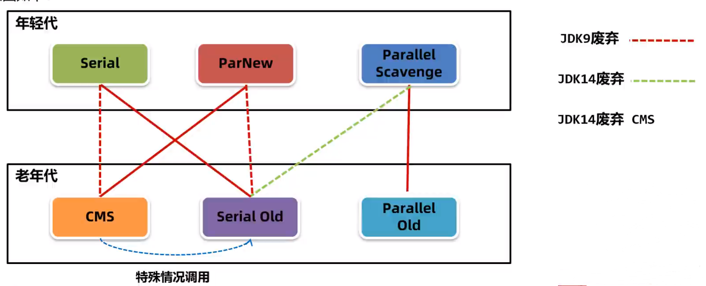
在工程实践中，常用三种垃圾回收器的组合，分别是：Serial + SerialOld、Parallel Scanvenge + Parallel Old和ParNew + CMS。
Serial + SerialOld
Serial 与 SerialOld 组合使用单线程进行垃圾回收，是历史最悠久的垃圾回收器。其中 Serial 负责年轻代回收，SerialOld 负责老年代回收。
Serial 采用复制算法回收年轻代，以优化频繁回收下效率问题。SerialOld 使用标记-整理算法回收老年代。
随着 Java 发展，堆内存逐步增长，使得 Serial / SerialOld 组合单线程执行的暂停时间无法忍受，逐渐退出历史舞台。
Parallel Scanvenge + Parallel Old
Parallel Scanvenge 与 Parallel Old 组合(以下简称 PS 和 PO)相较于 Serial 与 SerialOld 组合，使用多线程进行复制过程，提高了吞吐量。
PS 采用复制算法回收年轻代，PO 使用标记-整理 算法回收老年代。
PS + PO 是 JDK8 默认的垃圾回收器，重点关注垃圾回收的吞吐量。为了达成吞吐量的目标，PS + PO 垃圾回收器组合会自动地调整堆内存的大小，包括新生代中各部分大小、老年代的大小，晋升阈值。
PS + PO 非常适合用于无交互服务端程序，如：大文件生成，数学计算。
ParNew + CMS
ParNew 回收器全称Parallel New，从名字推断与 PS 和 PO 同源。ParNew 主要设计与 CMS 配合使用，否则只能使用 Serial + CMS 组合。
并行垃圾回收器
在 Java 更广泛地应用于 Web 服务端程序开发后，暂停时间成为影响业务的核心因素，因此，更多的垃圾回收器追求与用户线程并行执行。其中有专清理老年代的CMS 垃圾回收器，混合回收的G1 垃圾回收器。
CMS 垃圾回收器
高效并发
CMS 全称 Concurrent Mark Sweep(并发标记清除)，重点关注暂停时间。
CMS 是划时代的垃圾回收器，其首次实现了垃圾回收线程 与 用户线程 的并行执行。
垃圾回收阶段，CMS 会暂停所有用户线程，并开始初始标记，即获取 GC Roots。
初始标记获取到所有 GC Roots 后，恢复所有用户线程，并继续标记所有存活的对象，该阶段称为并发标记。
在并发标记结束后，进入重新标记阶段，因并发标记阶段与用户线程一起执行，所以需要重新整理在这期间用户线程改变的引用关系，以修正错标、漏标等情况。
在标记完成后，进入清理阶段，该阶段也与用户线程共同执行。
过程图如下：
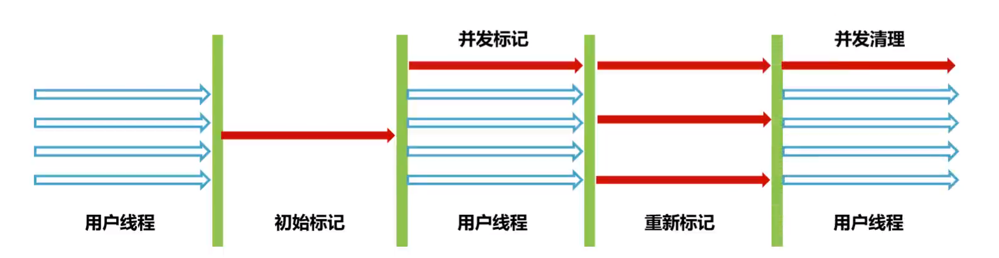
CMS 在回收阶段只有初始标记与重新标记阶段会暂停所有线程执行。初始标记有 OopMap 信息，所以效率很高；重新标记也只负责引用改变的标记，所以暂停时间也很短。所以 CMS 在垃圾回收期间暂停所有线程的时间很短，大部分时间都花在了并发标记与并发清理阶段，这两个阶段与用户线程并行，不会延长暂停时间。
「软件工业是一个妥协的过程。」即使强如 CMS 也并非完美无瑕。
跨代引用的效率问题
前文提到，JVM 使用卡表解决跨代引用问题。而维护卡表实际上有两部分，年轻代对老年代的引用 和 老年代对年轻代的引用。
CMS 只维护了老年代对年轻代的引用。
这么做主要因为：年轻代对象大多朝生暮死，如果记录了新生代到老年代的引用，那么这个引用关系很快会因为新生代对象被清理而失效，即需要频繁更新卡表。
因此，CMS 不得不将整个年轻代作为 GC Roots 进行扫描，效率受到极大影响。
内存碎片问题
CMS 垃圾回收器采用标记-清除算法，所以存在大量内存碎片问题。
CMS 垃圾回收器会在Full GC时整理内存碎片。
效率退化问题
当 Minor GC 时，幸存者区无法存放新生代的所有存活对象，并且老年代无法通过分配担保原则将新生代对象直接晋升到老年代时，CMS 会抛出Concurrent Mode Failure，CMS 会退化为 SerialOld，单线程回收老年代，造成效率大幅度下降。
浮动垃圾问题
浮动垃圾是指在并发清理阶段，垃圾回收线程与用户线程并行执行，此时用户线程改变对象引用关系而产生的废弃对象。这些对象本应该回收，却只能在下一次 Major GC 或 Full GC 时回收。
G1 垃圾回收器
G1 垃圾回收器全称：Garbage-First，将 PS 与 CMS 的优点相结合，取得一个折中的吞吐量和暂停时间。
G1 是 JVM 垃圾回收器的一个里程碑，其首次在 Java 虚拟机层面实现了一个回收器管理整个堆内存。JDK9 默认使用 G1 垃圾回收器。G1 的一大特点是可以设置一个期望的停顿时间，G1 设置的期望暂停时间动态调整堆大小，并自主控制回收规模。
堆分代的优化
在 G1 提出新的堆分代的模型后，原本的模型只能屈称古典堆分代模型，下文以此区分两种堆分代模型。
在古典堆分代模型中，整个堆被划分为了两个大区域，分别称作年轻代与老年代。
在 G1 堆分代模型中，整个堆被划分为若干分区，每个分区在不同时间段可以有不同的身份。
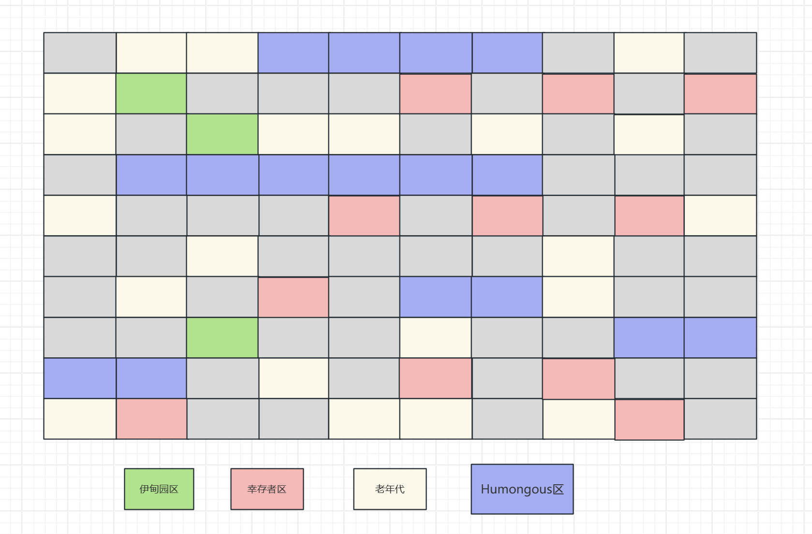
伊甸园区、幸存者区和老年代与古典分代理论一致，但其划分成了物理意义上分隔的多个小区域。
其中，Humongous 专门用于存放大对象，其通常横跨多个连续的内存空间，隶属于老年代。
为了更详细地讲解 G1 的堆分代模型，上图将 Humongous区 单独表示。移动一个大对象的成本极高，当一个大对象被创建时，若其对象大于分区大小的一半，则会直接存入老年代，并按照需求横跨一个或多个分区，。
每个分区中最多只能存放一个巨型对象，并且剩余的空间无法再利用，会造成局部内存碎片。
对 Humongous 来说，Minor GC和Major GC都会对其进行回收，但移动巨型对象极其耗费资源，所以 Humongous区 永远不会移动，即使Full GC。
值得注意的是，G1 分区是动态划分的，不同分区在不同时间点可能是不同身份。
一个分区可能是伊甸园区，在下一次回收后就会被划分为老年代。
详细回收过程
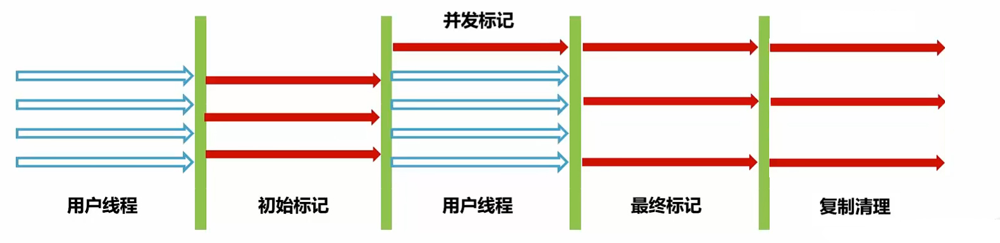
- 初始标记：STW，标记从 GC Roots 直接可达的对象。这个标记阶段通常与年轻代收集一起执行，因此STW时间很短。
- 并发标记： 在整个堆中查找活动对象，与应用线程并行，此阶段可能会被新生代GC中断。
- 重新标记：修正并发标记期间因用户程序而导致标记产生变动的标记记录，这个阶段标记规模不大，STW时间较短。
- 筛选回收：对各个 Region 中的回收的成本与价值进行排序，根据设定的停顿时间制定计划。此阶段理论上可以并行，但回收规模不大，时间用户可控，故停顿用户线程以提高回收效率。
值得一提，G1 垃圾回收的大部分暂停时间都分配在了筛选回收，即对象迁移阶段。
同时，对象迁移的并发进行也是未来低暂停垃圾回收器优化的抓手。
三色标记算法
三色标记算法是CMS和G1标记对象存活状态的一种实现，三色标记法是 CMS 和 G1 在与用户线程并行的情况下能进行垃圾标记和回收的保障。
三色标记法将对象在一个 GC 周期分为了三个状态：
- 白色：没有被标记或应回收的对象，在标记阶段开始阶段，除 GC Roots 之外，所有对象都是白色，在清理阶段，剩余的白色对象即为需要清理的对象。
- 灰色：该对象已经被标记为存活，但其引用的对象未完全标记，仍需遍历其引用链以标记可能的可达对象。
- 黑色：该对象存活，并且该对象引用链已扫描完毕。
其中，灰色与黑色的相同点是该对象确认存活，不同点是该对象的引用链是否扫描完毕。
执行过程
在三色标记算法运行开始，所有的对象都是白色对象，按照以下步骤进行：
- GC Roots 标记为黑色对象，GC Roots 直接引用的对象为灰色对象，将这些对象保存为一个集合。
- 遍历灰色对象集合，设遍历到的对象为 E，将 E 引用的对象标记为灰色并加入到集合中，并将 E 置黑。
- 重复上一步，直到所有可达对象为黑色，即对象集合为空。
- 清理白色对象。
值得注意的是，遍历灰色对象集合这个过程，实际上是一个**广度优先搜索(BFS)**过程。
并发问题
三色标记算法在实际使用中基本处于并行环境，所以有多线程安全问题。
用户线程可能会在任意时刻改变对象的引用关系，导致并发问题，主要问题有二：
- 多标问题：灰色对象未被遍历到时，该对象的引用被断开。这会导致该对象被错误地认为黑色对象。
- 漏标问题：黑色对象在标记时引用一个
事实白色对象（即：本应为垃圾的对象）。因为黑色对象已经被扫描完毕，所以这会导致该白色对象被误认为垃圾，即漏标对象。
一般实践中，多标问题会影响回收效果；而漏标问题会影响回收的正确性。所以一般回收器不会着重解决多标问题。
在漏标问题下，一般又有两种条件：
- 黑色对象重新引用了该白色对象。
- 灰色对象断开了白色对象的引用。
增量更新
增量更新是 CMS 解决漏标问题的基本思路，基于写后屏障。
写后屏障(Post Write-Barrier)是指 JVM 在引用字段类型后，插入额外的字节码。
通过写后屏障，在用户线程更新引用关系时，将黑色对象重新置为灰色，加入集合中。
在遍历结束后，重新遍历集合，即可发现漏标的对象。
其主要是在条件一突破，重新扫描黑色对象。
原始快照(SATB)
SATB 并非一个数据结构，而是一个概念，在实现中，也用到了写屏障技术，SATB 使用写前屏障(Pre Write-Barrier)。
在开始标记时，SATB 记录所有 GC Roots 的初始状态（即"快照"）。
在并发标记过程中，发生变化的对象会被记录下来。
在标记结束后，重新遍历引用发生变化的对象，并根据新的引用关系和更新标记状态。
低暂停垃圾回收器
Java 程序多用于开发服务端应用，服务端应用的一大特点为：对响应时间非常敏感。
JVM 中对响应时间影响最大的部分即 STW 时间，为了尽可能地压缩 STW 并保证较高的吞吐量，提出了低暂停的垃圾回收器，如 JDK11 中添加的 ZGC 与 JDK12 添加的 ShenandoahGC。
在 ZGC 与 Shenandoah 规划下，JVM 堆在任意堆空间大小下，最大暂停时间都保持在 20ms 左右。
在一般情况下，在堆内存大于 100GB 后，G1 的暂停时间会变得很长，为了达到设置的暂停时间，G1 可能会悲观地不断调整回收规模与分代比例，诱发频繁的 MinorGC，造成吞吐量雪崩。
而 ZGC 可以在最大 16TB 的内存大小、Shenandoah 可以在最大 256TB 的内存大小下，保持一个正常的停顿，并保证一个可用的吞吐量，并且堆大小增长对暂停时间无明显相关。
ShenandoahGC 与 ZGC 的一大共同点是大量操作对象头信息。
对象的堆内表示
一个对象在堆中表示，一般需要两部分信息：对象头(Object Header) 和 对象数据(Object Data)。
其中对象头包括 Mark Word、元数据指针，对象数据则为对象字段及内存对齐填充。
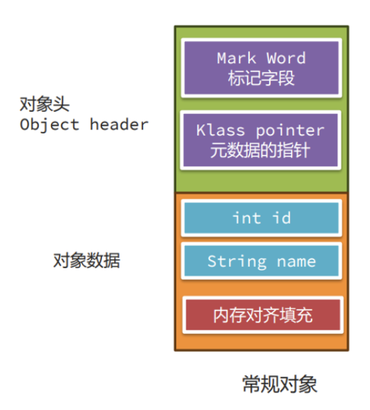
其中，Mark Word 负责标记对象的回收状态与锁状态。
在 64 位虚拟机、开启指针压缩的情况下，Mark Word 的分布和状态如下图所示：
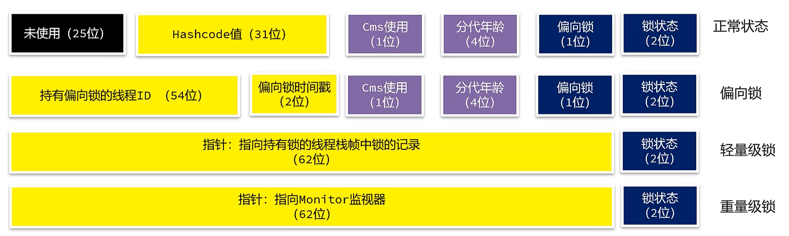
其中，在正常状态、偏向锁下，分代年龄用四位表示，则分代年龄最大为 15，所以 G1 的默认晋升年龄为 16。
TB 级内存管理：NUMA 架构
在一般生产环境中，采用的都是UMA(Uniform Memory Access Architecture,统一内存访问)架构。
在 UMA 架构中，一片内存中存在有多颗所属逻辑 CPU，所有 CPU 通过一个共享的内存控制器访问共同的物理内存池。在多个逻辑 CPU 的访问中，必然会出现竞争，操作系统为了避免竞争过程的安全性问题，会引入锁来解决冲突。
有锁在的场景大概率会影响访问效率，当 CPU 核数越来越多，竞争将越来越激烈，性能会大大降低。
因此，为了解决现代服务端硬件的多核 CPU 调度效率问题，提出NUMA(Non Uniform Memory Access Architecture,非统一内存访问)架构。
在 NUMA 架构中，每颗 CPU 都会有一块内存，CPU 会优先访问距离自己最近的内存。
此外，NUMA 允许多台服务器组成一台逻辑服务器对外提供服务，因此堆空间也可能是分布式的。
ZGC 与 ShenandoahGC 可以感知 NUMA 架构，并高效管理大规模的逻辑内存。
ShenandoahGC
ShenandoahGC 是由 Red Hat 开发的一款极低延迟的垃圾回收器，其延续了 G1 的回收思路，通过前向指针(Forward Pointer,也叫转移指针)，能确保在并发状态下正确高效地执行 GC 任务。
ShenandoahGC 分为 1.0、2.0 两个主要版本，1.0 版本被集成在 JDK8 和 JDK11 中，在之后的 JDK 中都采用 2.0 版本。
转移指针 / 前向指针
在 JVM 结构中，对象分为对象头与对象数据，对象头重包含标记字段(Mark Word)和元指针数据；对象数据中包含各种字段以及内存对齐填充，大体结构如下图所示：
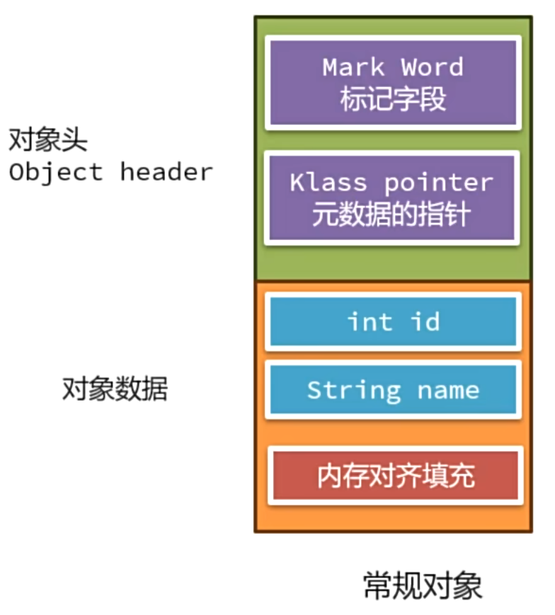
在 1.0 版本中，Shenandoah 修改了对象头的数据，为其中添加前向指针(Forward Pointer,也叫转移指针)，该指针大小 8 字节。
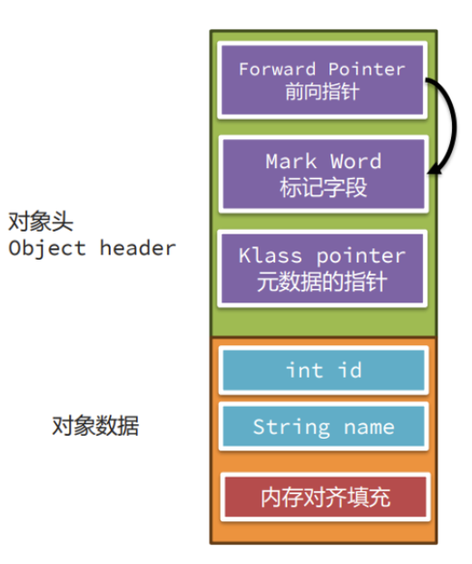
在对象转移阶段，如果该对象不需要转移，则指针指向自己；否则指向转移后的对象，其中，转以后的对象的前向指针依旧指向自己。
利用读前屏障(Pre-Read Barrier)，Shenandoah 可以确保在并发条件下，用户线程将获取到正确的对象。
读屏障和写屏障类似，读屏障将在获取对象的前后插入指令，在上文中，当读取对象时，Shenandoah 插入了判断指令，判断对象的前向指针是否指向自己，以此来引导 JVM 读取并且将引用牵到正确的对象。
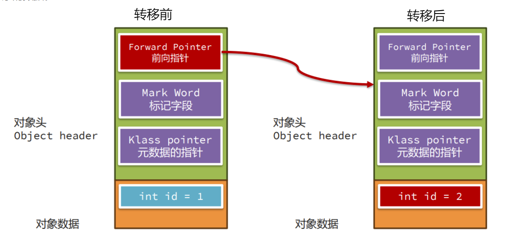
在写操作时，Shenandoah 采用写前屏障，会检查写入对象的 Mark Word 中的 GC 状态，如果 GC 状态为 0，则表示目前没有 GC 进行，线程可以直接进行写入操作。否则，则根据 GC 状态进行相关状态，并可能要求用户线程执行标记工作。
在 2.0 版本中，Shenandoah 不再插入前向指针，而是用前向指针 覆盖 转移前对象的 Mark Word，以此来消除额外的内存开销。
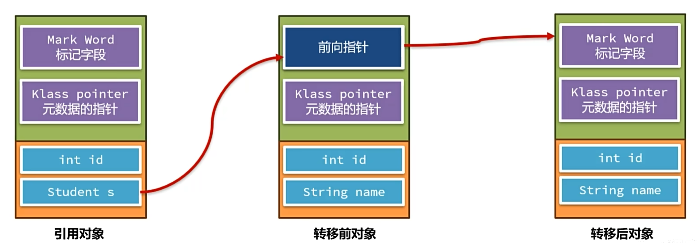
回收流程
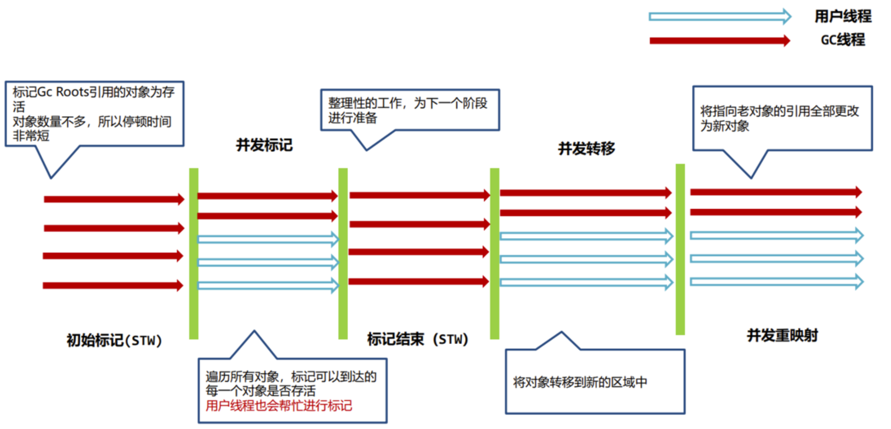
- 初始标记：标记所有由Gc Roots直接引用的对象为存活状态。由于此阶段涉及的对象数量相对较少，因此 STW 一般非常短。
- 并发标记：遍历堆上的所有对象，通过跟踪对象的引用关系，标记出所有可达的存活对象。为了加速这一过程，用户线程将会协助标记工作。
- 标记结束：主要进行一些整理性的工作。例如：处理在并发标记阶段未被标记的对象（即被认定为垃圾的对象），并为下一个阶段做准备。
- 并发转移：将标记为存活的对象从旧的内存区域转移到新的内存区域中，减少内存碎片，并提高未来垃圾收集的效率。
- 并发重映射阶段：遍历所有的引用，将那些原本指向旧对象的引用更新为指向新对象。
ZGC
ZGC(Z Garbage Collector) 是 Oracle 推出的专注于延迟的垃圾回收器，ZGC 在 JDK11 以实验性的特性引入，在 JDK15 正式投入生产使用。ZGC 可以基本确保暂停时间在 10ms 以内。
JDK16 对 ZGC 进行了一次里程碑式升级。
此后，ZGC 的最长暂停时间为 1ms，时间复杂度为O(1)。
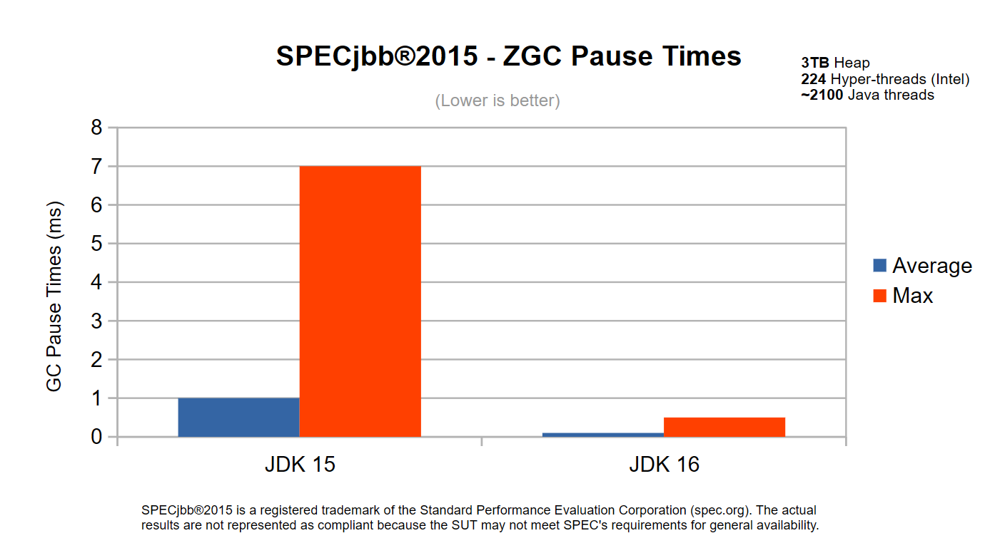
堆划分
ZGC 的堆划分与 G1 类似，每个区域称为Zpage，有三种 Zpage:
- Small Page：2MB，放置小于 256 KB 的小对象。
- Medium Page：32MB，放置大于等于 256 KB 小于 4 MB 的对象。
- Large Page: 只存放一个大于 4MB 的对象(X * MB)。
着色指针
在 ZGC 规划中，着色指针将原来使用 8 字节的指针分为三部分：
- 前 16bits：未使用。
- 4bits 颜色位：每一位代表对象不同状态，某一时刻中，只有一位可以为 1。
- 44bits：有效地址，44bits 可以表示最大 16TB 内存地址，所以 ZGC 理论上最大可以支持 16TB 堆。在一般实践中，有效地址一般只使用 42 位。
基此，ZGC 不支持 32 位操作系统。
其中，颜色位分为：Finalizable、Remap、M0 和 M1。
- Finalizable：终结位，只能通过终结器访问的对象。
- Remap：转移完成，对象的引用关系已经变更。当对象初始化后，对象的颜色指针即被标记为 Remap。
- M0 / M1：标记可达对象。M0 与 M1 主要用于区分不同的垃圾回收批次所标记的活跃对象。
M0 与 M1
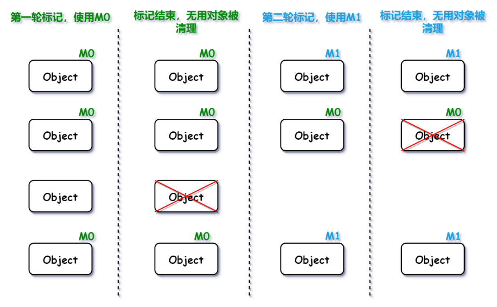
如果只使用一个标志位，则在第二轮标记时，无法分辨某对象为上轮存活还是本轮存活。故一般使用两个不同标志位，以区分不同的垃圾回收批次。
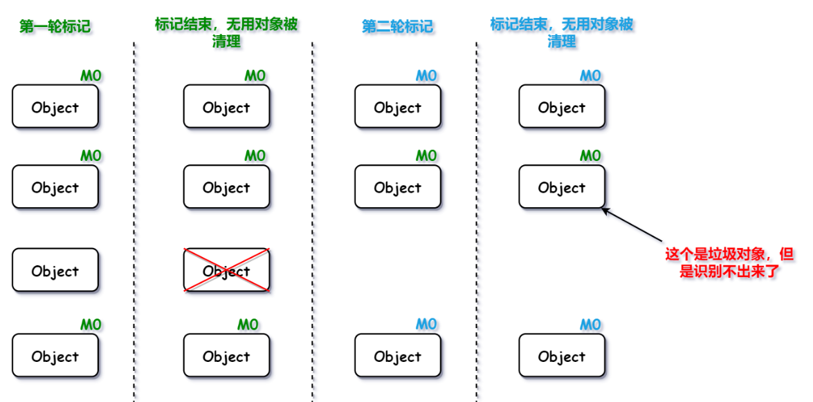
转发表与读屏障
转发表主要作用于 Remapped 状态的对象，用于关联转移前的地址和转移后的地址。
在读取对象前，通过读屏障，引导读取适宜的指针地址。
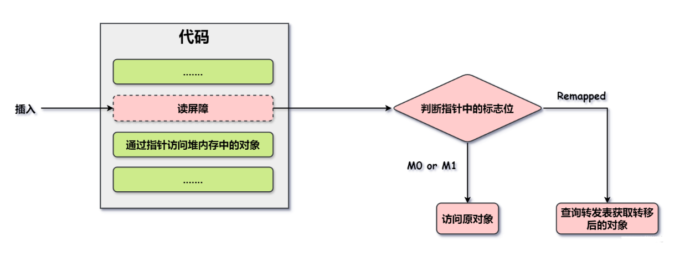
在读取过程中，若持错误指针访问对象，该操作会被读屏障截获，并根据转发表将该对象的指针修复为正常指针，即指针自愈。
内存多级映射
上文提到，同一个对象可能有不同 GC 状态，导致指针的不同，但该指针实际上表示的是同一个对象。
为了将不同状态的指针指向同一个对象，ZGC 采用内存多级映射，使用mmap将不同的虚拟内存地址映射到同一个物理内存地址上。
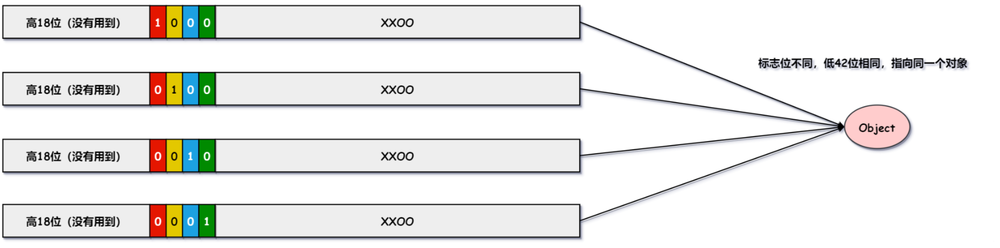
回收流程
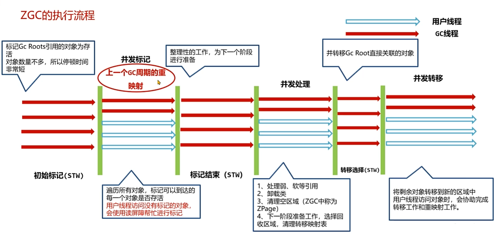
- 初始标记：STW，标记 GC Roots 直接引用的活跃对象，对象数量较少，STW 时间较短。
- 并发标记：并行执行，遍历所有对象，标记可以到达的对象为存活。并且在访问对象时，通过
转发表修正指针，即完成上轮回收遗留的问题。 - 标记结束：STW，主要解决上一阶段漏标问题。
- 并发处理：并行执行，完成回收工作前准备，确定回收规模。
- 转移选择：STW，主要转移 GC Roots 直接关联的对象。
- 并发转移：并行执行，将剩余对象转移到新区域中，用户线程会协助完成转移和重映射工作。